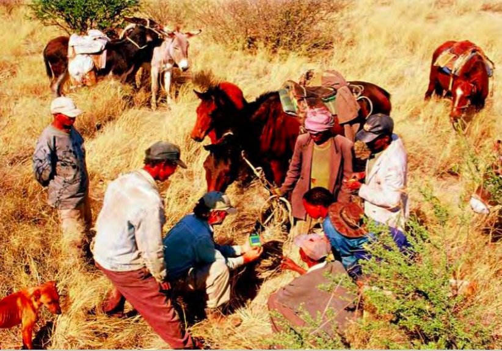
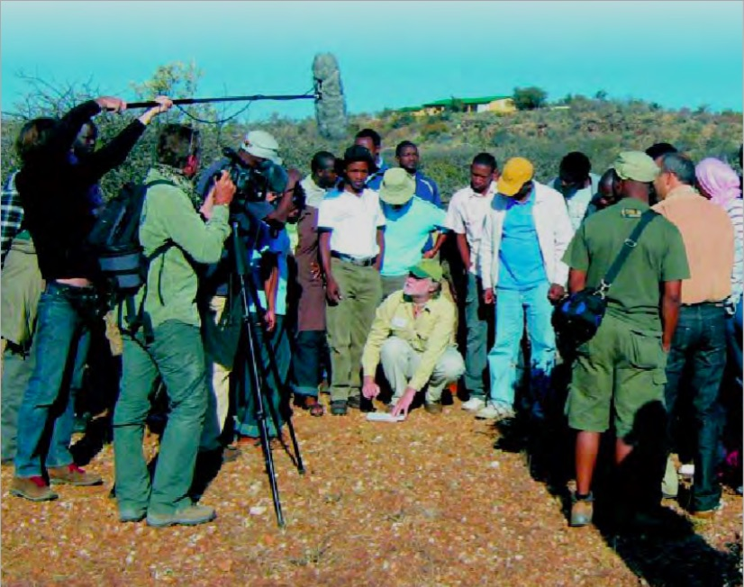

Donnees-a-voir
Contexte des datas
Dans un contexte qui évolue en permanence, les données sont désormais partout. Ce n’est même pas évident de savoir distinguer ce qui est ou non une donnée : est-ce que les données ne recoupent pas l’intégralité de l’Internet, du numérique ? elles impactent en tout cas chaque aspect du quotidien, qui devient mesuré et sur lequel on peut agir. Nous nous sommes tout particulièrement intéressés à l’actualité dans le domaine politique, l’open-data, les recherches en sciences sociales ou celles d’activistes, dont nous vous présentons une sélection évidemment non exhaustive. Vous trouverez aussi quelques exemples de représentations telles qu’elles sont de plus en plus utilisées dans les médias d’information : data-visualisations, cartographies et graphiques divers… et un petit guide du marketing qui nous explique un autre usage fort répandu de ses masses d’informations…
Projet de loi pour une République numérique
Succédant à la Loi pour la confiance dans l'économie numérique de 2004, le projet de loi a démarré par une consultation publique en ligne, enrichi de certaines propositions des internautes, a été débattu puis voté à l'Assemblée nationale du 19 au 26 janvier 2016.
Le projet de loi voté par les députés en première lecture introduit notamment l’ouverture par défaut des données publiques, la neutralité du net, une obligation de loyauté des plateformes en ligne, ainsi qu’une protection accrue pour les données personnelles des usagers du net. La future loi pour une République numérique prévoit également les conditions d’un Internet accessible au plus grand nombre, au travers de l’accélération de la couverture du territoire en très haut débit et en téléphonie mobile, de mesures pour un meilleur accès des personnes handicapées aux services en ligne, et de la création d’un droit au maintien de la connexion internet en cas d’impayé pour les foyers en difficulté.
Source : Wikipedia.
Projet porté par Axelle Lemaire, Secrétaire d’État auprès du Ministre de l’économie et des finances, chargée du numérique et de l’innovation.
http://www.gouvernement.fr/ministre/axelle-lemaire
http://www.economie.gouv.fr/republique-numerique
https://www.republique-numerique.fr
Etalab
Etalab est une mission créée en 2011 chargée de la politique d'ouverture et de partage des données publiques du gouvernement français, de coordonner l'action du gouvernement en vue du gouvernement ouvert et de la mise en œuvre des fonctions attribuées à l'admninistrateur général des données. Etalab développe et maintient le portail des données ouvertes du gouvernement français data.gouv.fr.

Medialab
Dixième centre de recherche de Sciences Po, le médialab a été créé en 2009 pour aider les sciences sociales et humaines à tirer le meilleur profit de la masse de données rendues disponibles par la numérisation.
Le médialab est un laboratoire de moyens numériques, un centre de ressources et de compétences ainsi qu’un lieu d’expérimentation, de veille et de recherche dédié à la pratique des sciences sociales.
http://www.medialab.sciences-po.fr/fr/

Open Democracy Now
Open Democracy Now rassemble une communauté d’acteurs aux profils complémentaires désireux d’apporter des solutions concrètes aux enjeux d’une démocratie plus participative et collaborative. Le projet est conjointement organisé par Open Law, DemocracyOS, Open Source Politics, Etalab, République Citoyenne, et des civic hackers motivés qui ont rejoint l’aventure. Porté tout au long de l'année, le projet Open Democracy Now se décline sous forme de grandes rencontres, comme des hackathons, échelonnées tous les deux mois environ.

Regards Citoyens
Le collectif Regards Citoyens est une association constituée de citoyens de tous âges et régions, tous bénévoles, qui se sont rencontrés sur Internet dans un désir commun de proposer un accès simplifié au fonctionnement de nos institutions démocratiques à partir des informations publiques.
https://www.regardscitoyens.org/

Open Law
Open Law est un programme de cocréation numérique destiné à mettre en valeur le droit ouvert, accompagner globalement l'ouverture des données juridiques et stimuler l'innovation collaborative autour des données juridiques ouvertes. Il préfigure et consolide une communauté de legal hackers composée de toute personne désirant contribuer, quelle que soit sa formation, son expérience ou encore ses compétences étudiants et professionnels du droit, graphistes, développeurs ou entrepreneurs ; porteurs de projets et simples contributeurs, etc.

The Open Data Institute ( Londres )
L’ODI a été co-fondé en 2012 par l’inventeur du web Sir Tim Berners-Lee et l’expert en intelligence artificielle Sir Nigel Shadbolt pour répondre aux défis mondiaux d’aujourd’hui de l’utilisation du web des données.

Open Knowledge Foundation
L'Open Knowledge Foundation est une association à but non lucratif de droit britannique promouvant la culture libre, en particulier les contenus libres et l'open data (données ouvertes). Elle a été créée le 24 mai 2004 à Cambridge au Royaume-Uni. La fondation a publié la définition des savoirs libres (open definition) et conduit un certain nombre de projets, comme CKAN, un logiciel permettant de créer un catalogue de données, utilisé par de nombreux organismes pour gérer leur portail de données ouvertes, ou « where does my money go », un service de suivi des dépenses publiques. En plus de fournir des outils techniques, la fondation milite pour la culture libre et offre une aide juridique dans le choix des licences accompagnant des contenus libres. Elle a par exemple soutenu le développement de la licence Open Database License (ODbL) et l'écriture de la définition de la culture libre (Open Definition).
Source : Wikipedia

Tactical Tech
Organisation internationale dédiée à l'utilisation de l'information dans l'activisme. Basé à Berlin, Tactical Tech travaille avec un réseau international de partenaires et collaborateurs pour aider les défenseurs des droits, de la responsabilité et la transparence et la communauté avec laquelle ils travaillent.

PPGIS
Le forum sur l’usage participatif des systèmes et technologies de l’information géo-spatiale. C’est un site pour discuter des technologies utilisées en gestion de crise, développement participatif, gestion durable des ressources naturelles et droits de propriétés coutumiers dans les pays développés et parmi les populations indigènes dans le monde.
http://participatorygis.blogspot.fr
Travaux du Comité de Coordination des Peuples Autochtones d’Afrique
Exemple d’utilisation de technologies de l’information et de la communication dans les activités de plaidoyer en faveur de l’environnement sur le site de l’IPACC, PDF à télécharger de 9,6 Mo. .
http://www.ipacc.org.za/images/reports/climate_and_environment/Windhoek_French_Web.pdf


Flowing Data
Un site de référence dans le domaine de la data visualisation, avec une page d'exemples très fournie.
http://flowingdata.com/category/projects/
Abécédaire du marketing sur le site d'Acxiom
Acxiom, expert de la donnée client, de l’analytique et des services marketing, s’appuie sur une solide expertise de 40 ans dans l’exploitation de la richesse des données clients pour renforcer les connexions entre consommateurs et annonceurs sur l’ensemble des médias. À travers sa connaissance des consommateurs, et son savoir-faire pointu en segmentation, Acxiom maximise la valeur client en préconisant le choix du canal et du média le plus pertinent.
http://www.acxiom.fr/labecedaire-du-marketing/

Apprendre l'open data
Pour en savoir plus, une liste de documentation partagée initiée lors d'un cours de Sciences Po Paris donné par Laure Lucchesi et Claire Foulquier-Gazagnes d'Etalab.
https://github.com/cmfg/LearnOpenData